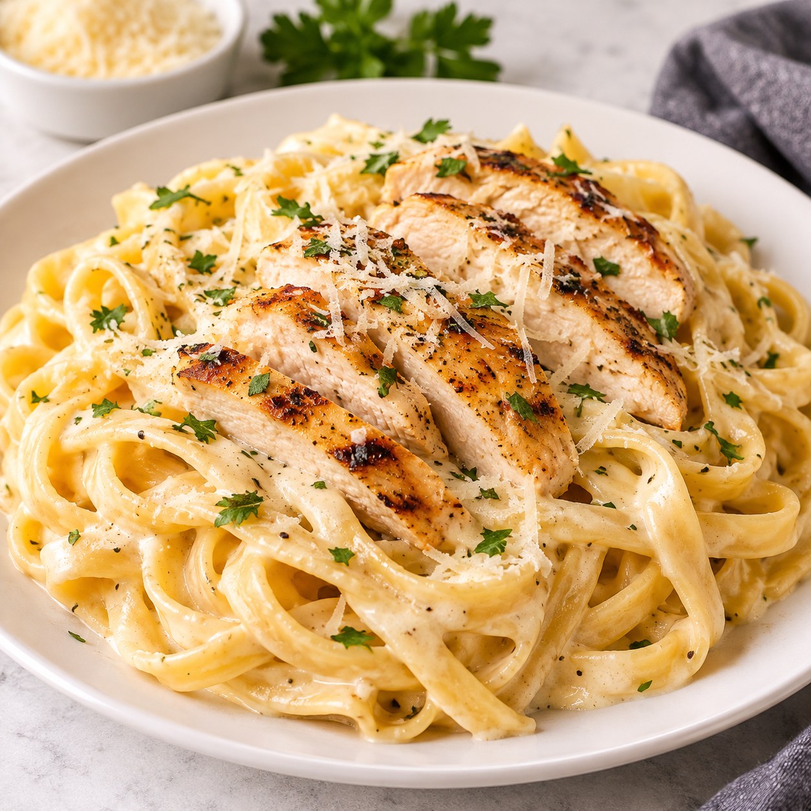

Classic Chicken Alfredo

Classic Chicken Alfredo is a creamy pasta dish made with tender chicken, fettuccine, parmesan cheese, and Alfredo sauce. It is a simple and filling meal that is great for dinner.
Difficulty: 2/5
Spiciness: 1/5
Season: Fall
Ingredients
- Chicken breast
- Fettuccine pasta
- Heavy cream
- Parmesan cheese
- Butter
- Garlic
- Salt and pepper
Instructions
- Cook the pasta.
- Season and cook the chicken.
- Make the Alfredo sauce.
- Add the pasta and chicken to the sauce.
- Mix together and serve.
Recommendation
Classic Chicken Alfredo is a good choice for a family dinner or a simple meal at home.